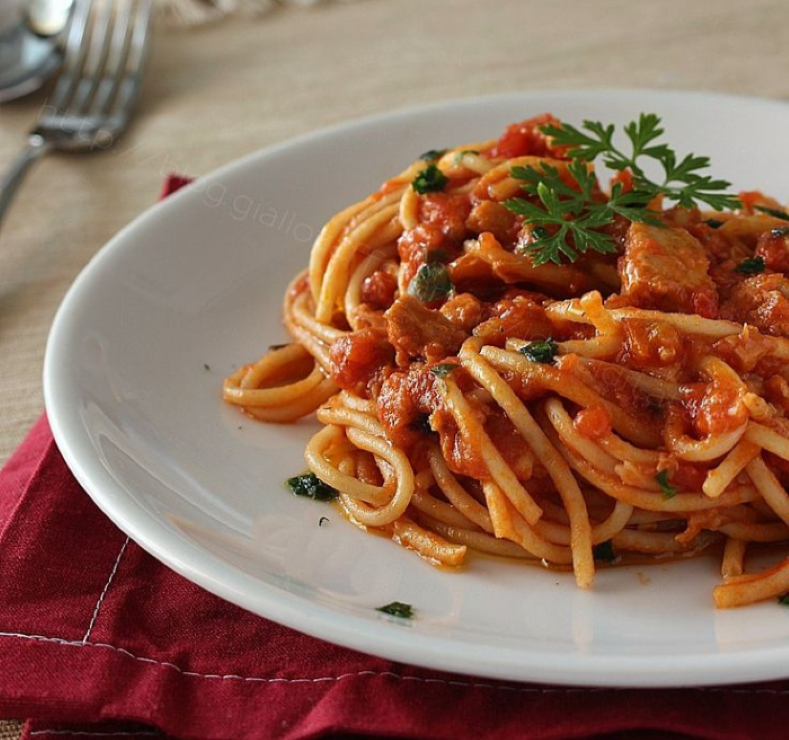

Primi piatti
Pasta con ragù di pesce spada:
- 320g di pasta
- 300g di pesce spada in trancio
- 30g di olio extravergine d' oliva
- 20g di vino bianco
- Aglio 1 spicchio
- 3 ciuffi di prezzemolo da tritare
- Pepe nero q.b
- Sale fino q.b
- 400g di pomodorini cilieggino
- 10g di Capperi sottaceto

Procedimento:
- Scaldate l’olio in una padella con uno spicchio d’aglio intero
- Versatevi i pomodorini e aggiungete il sale
- Pepate e mescolate per far insaporire il tutto, poi aggiungete i capperi 5, coprite con coperchio
- Proseguite la cottura per 20 minuti a fuoco dolce.Nel frattempo occupatevi dello spada: se dovesse essere necessario tagliatelo a fette
- Eliminate la pelle e tagliatelo a cubetti
- Mettete sul fuoco una pentola colma d'acqua, salata a piacere, che servirà per la cottura della pasta.
- In un'altra padella scaldate dell’olio con uno spicchio d’aglio intero .
- Aggiungete lo spada e lasciatelo rosolare leggermente
- Sfumate con il vino bianco
- Eliminate lo spicchio d'aglio e condite con sale e pepe
- Nel frattempo l'acqua sarà arrivata a bollore e potrete cuocere la pasta
- Trascorsi i 20 minuti eliminate lo spicchio d'aglio dai pomodorini e dal pesce spada
- Aggiungete i cubetti di spada al condimento
- Non appena la pasta sarà cotta, scolatela e trasferitela direttamente nel tegame
- Saltate il tutto per pochi istanti, aggiungete il prezzemolo tritato